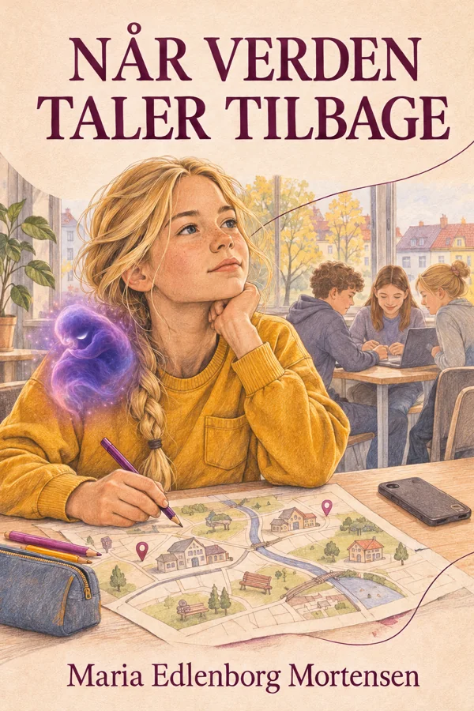

Hov.
Hvad sker der her?
En port mangler noget. En farve kan skifte. En historie venter på dit næste træk.
Du må prøve dig frem. De mindste kan gå på opdagelse sammen med en voksen.
Kan du åbne porten?
Se på portens tegn. Find de sten, der passer til de tomme pladser. Du kan også lægge en sten tilbage.
En lille prøve fra idéen til Den låste port.
Hvilke sten kalder tegnene på?
Hvilken farve
har du lyst til?
Du behøver ikke forklare den. Vælg en farve, rør ved formen, eller bliv her lidt.
En farve kan betyde noget forskelligt for dig og for mig.
Her er plads til din farve.
Hvem holder
den anden ende?
Træk i tråden nedenfor. Du kan også bruge piletasterne, når tråden er valgt.
Et kort fortælleeksperiment lavet til dette rum.
Alma fandt en tråd ved porten. Den forsvandt ind gennem en lille sprække.
Du bestemmer tempoet.

Når verden
taler tilbage
Alma øver sig på at sige nej. Men hvordan finder man sin egen stemme, når de andres fylder så meget?
Mød Alma og Bankeren i en historie om venskab, grænser og plads til at være sig selv.
Hele bogen · 41 sider · PDF · 2,9 MB
Til voksne: Hent læsevejledningen ↓
To sider med samtalespørgsmål og små aktiviteter · PDF · 71 KB
Der er flere
måder at være med.
En ven vil lege noget, du ikke har lyst til. Hvad kunne du sige?
Prøv en mulighed. Du må også finde dine egne ord.